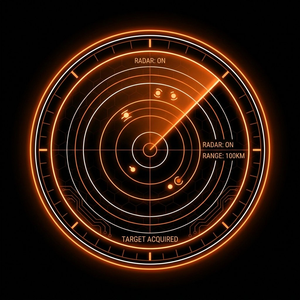
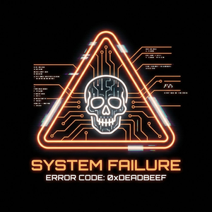

PROTOCOLO OMEGA — ACCESO RESTRINGIDO

Pista 1 — Radar
Las señales detectadas son exactamente tantas como el primer dígito. Cuenta los puntos en la pantalla.
Pista 2 — Sistema de verificación
El nivel de autenticación requerido es OMEGA‑7. El segundo dígito es el número de letras de OMEGA.

Pista 3 — Log de error
0xDEADBEEF. El tercer dígito es el número de letras únicas en DEAD.
Pista 4 — Logo F5
La instalación lleva operativa desde el año en que se fundó. El último dígito es la inicial numérica del nombre en clave.